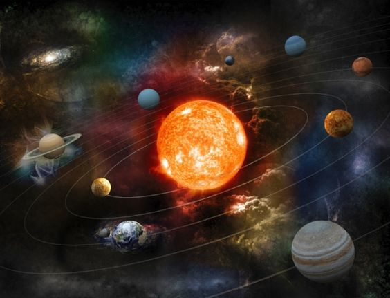

Sol
O Sol é a estrela mais próxima da Terra, dista aproximadamente 150 milhões de quilômetros de nós,
e é responsável por manter todo o Sistema Solar em sua interação gravitacional: oito planetas e os
demais corpos celestes que o compõem, como planetas anões, asteroides e cometas.
Terra:
O Planeta Terra é um dos planetas que fazem parte do Sistema Solar e é o terceiro planeta mais próximo
do Sol. A sua formação ocorreu há bilhões de anos, assim como a existência de vida aqui . Algumas teorias
explicam sua origem, como a teoria da nebulosa solar.
Marte:
Marte é um dos nove planetas do Sistema Solar. É o quarto a partir do Sol, estando localizado a uma distância
de pouco mais de 227 milhões de quilômetros desse astro. O planeta Marte completa uma volta ao redor do próprio
eixo em 24 horas e 37 minutos, ao passo que o movimento de translação demora 687 dias. Trata-se de um planeta
terroso com uma fina atmosfera composta predominantemente por dióxido de carbono.
Jupiter:
Júpiter é o maior planeta do Sistema Solar, estando situado entre Marte e Saturno. Seu tamanho rende-lhe vários
satélites naturais orbitando ao seu redor, cerca de 70. Durante a noite, esse planeta pode ser visto a olho nu, sendo
a segunda estrela mais brilhante, atrás apenas de Vênus, o segundo planeta na ordem usando-se o Sol como referência.
Saturno:
Saturno é o sexto planeta a partir do Sol e é o segundo maior planeta do Sistema Solar, ficando atrás apenas de Júpiter.
Suas dimensões são 9 vezes maiores que as da Terra. Devido à sua composição, é conhecido também como gigante gasoso e destaca-se
pela beleza do sistema de anéis que o circunda, os quais são formados a partir de fragmentos de rocha e gelo.